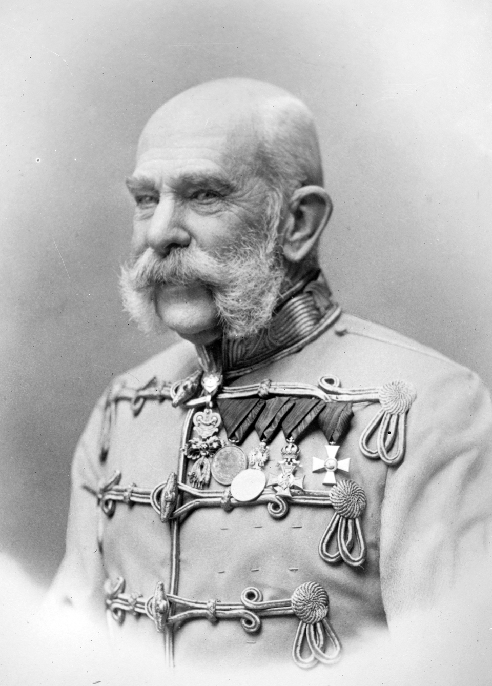
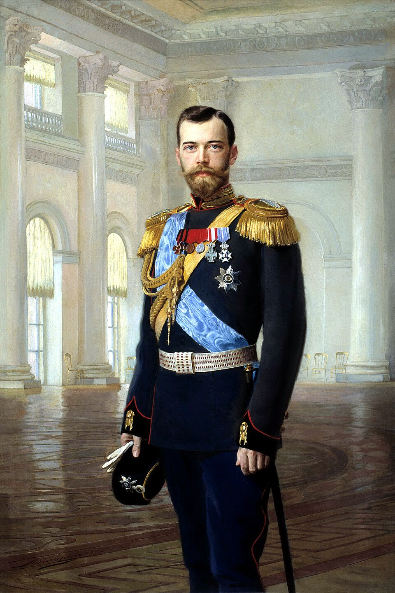
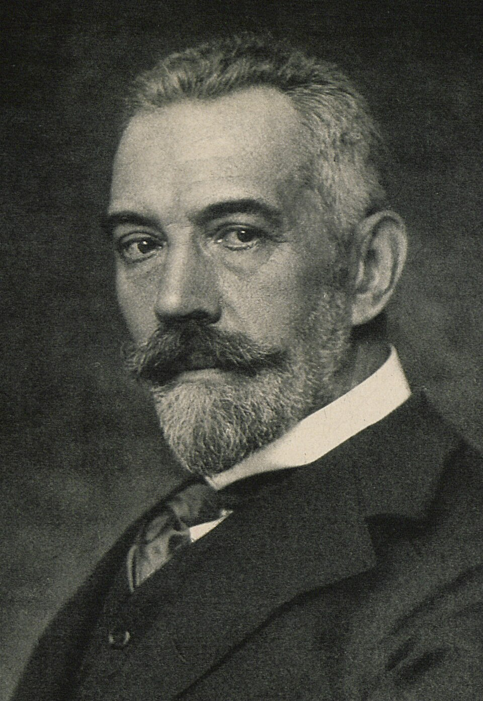

1

Franz Joseph · Emperor of AustriaDeclares war on Serbia · 28 July
2

Nicholas II · Tsar of RussiaOrders the whole army to mobilise · 30 July
3

Bethmann Hollweg · German ChancellorMust answer today · 31 July

5 July: the "blank cheque"Germany is the committed player: the incumbent. Russia is the entrant.